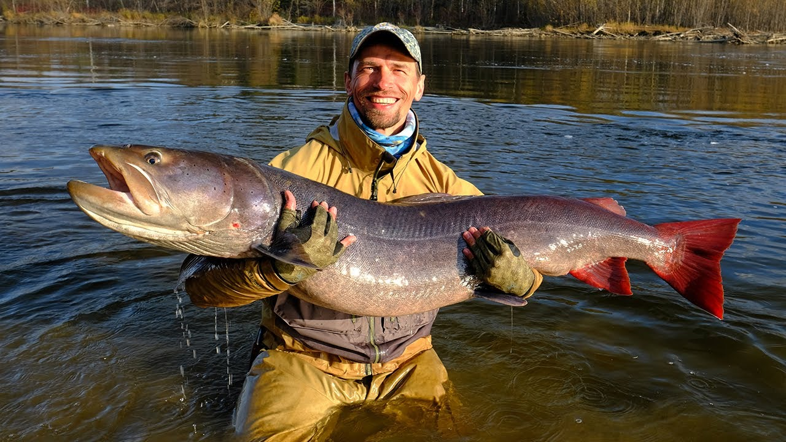
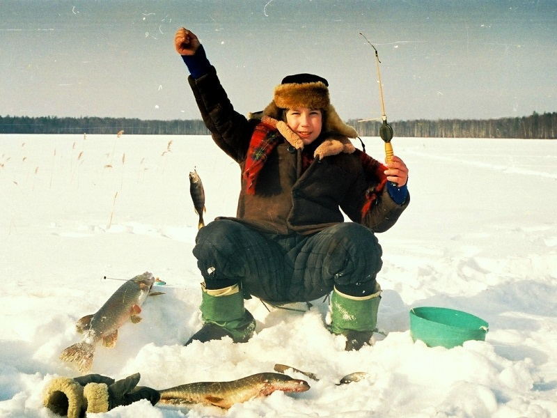
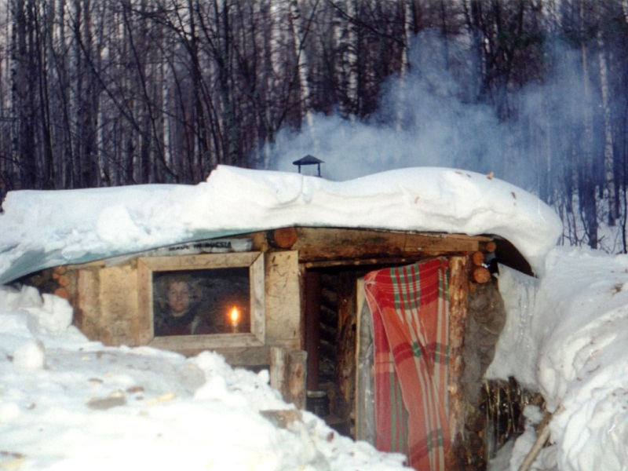

У нас работают настоящие профессианалы, которые с радостью готовы поделится своим опытом в рыбной ловле.
Ниже представлены сымые интересные байки и рассказы от наших друзей:
РЫБОЛОВНЫЕ БАЙКИ И РАССКАЗЫ
Немой таймень:
Как рыбаки, под Шарыпово, тайменя весом 120 килограмм поймали.
Вспомнил, как лет тридцать назад поехал на шабашку в город Черненко, сегодня именуемый как Шарыпово. В этом городе я обзавелся друзьями- охотниками и рыбаками. Моё знакомство с этой местностью совсем не ограничилось ударными трудами.
Итак, была и охота, и рыбалка, знакомство с Тайгой и местными озерами, речушками, а также с дивными рыбами и не менее удивительными методами их ловли. Фотографий непосредственно с того, что хочу описать не имею. Разве что, духовные. Опишу лишь на словах.
Расположились мы с «коллегами» возле какой-то ну уж совсем неприметной речушки. Вроде бы, хотели что-то сварганить из закуски. И, вот, смотрю я, местные рыбаки берут курицу и осмаливают её целиком. Затем достают какой-то «кованый якорь». Смотрю, речку буквально можно перепрыгнуть с разбегу. Спрашиваю: «зачем вам тут лодка, (что ли)…?» А они в ответ привязывают этот «якорь» на ТОЛСТЕННУЮ ВЕРЕВКУ подобную бельевой. Насаживают эту курицу на «якорь», другой конец веревки привязывают к автомобильной лебедке и говорят мне: «увидишь».
Ну, банкет мы продолжали сочинять. Прошло немного времени. А потом я заметил, что эта «шестиструнная» веревка натянута как на гитарном грифе. И где-то полтора часа ребята кого-то там тянут….
Таймень весом примерно в 120 килограмм бы вытащен на берег. Сказали, что у него там была нора. Я примерил, что моя голова влезала в его пасть.Подарили мне кусок, который полностью заполнил средних размеров советскую домашнюю морозилку. А кусок от него в диаметре как раз заполнял большую сковородку.
Этот «немой» таймень впечатлил меня надолго. Рассказал и сыну, и вам решил..

Это не рыбалка, а ночь, луна и — шаги на кладбищеb>
Эту ночь выпало нам, студентам музыкального училища, встречать на кладбище, вместо того, чтобы на водохранилище ловить щуку к новогоднему столу, куда мы и собирались в эти дни. А тут ночное кладбище. Нет, мы не какие-нибудь готы и любители острых ощущений. Всё гораздо проще, но оттого нисколько не легче. По сути, целый вечер и вот уже полночи мы копаем могилу отцу одного из преподавателей нашего музыкального училища. А всё началось с того, что в духовое наше отделение, которое за глаза зовётся «буховым», заглянули высокопоставленные на уровне училища гости, а именно зав. отделением и завуч музыкального училища. С ними были и те, с кого и начались наши злоключения на кладбище. Прозвучала просьба, в которой звучали умилительные слёзные нотки. Выяснилось, что преподавателя обманула какая-то компания по предоставлению ритуальных услуг. Вроде как «копали» или как там их, «копатели», что ли, короче, мужики с лопатами, напились в преддверии новогодней ночи и не успели выкопать могилу. А на следующий день уже похороны. И вот – просьба к нам, парням уже после армии, выкопать в срочном порядке эту могилу за приличное вознаграждение. Студенту выбирать не приходится, тем более Новый год на носу. Похороны как раз выпали на 31 декабря.
С могилой сразу начались трудности. Сняв ломами и топорами на железных черенках слой мерзлой земли, мы уткнулись в каменистую почву, которую вначале тоже пришлось долбить ломами, как толстый лёд пешнёй на зимней рыбалке. Кто, может быть, помнит американскую фанк-группу «Ночь трёх собак»? Так вот, мы тут тоже вначале как три собаки рылись в мерзлой земле, изредка подвывая на луну, пока одна из собак в образе Вовки-трубача не дезертировала позорно и не оставила нас двоих стойко переносить тяготы и лишения, как говорилось в уставе Советской Армии. Ту «собаку» мы, конечно, потом заклеймили позором и выплатили ей только часть гонорара, но сейчас нам было совсем невесело. Хотелось пить, чего-нибудь перекусить, работы ещё до утра, не меньше. А тут ещё этот антураж из крестов и памятников в дрожащем лунном свете, от чего нам виделось какое-то движение среди могил, и чувствовался тяжёлый взгляд из-за спины. Но вскоре с погружением в землю по мере выкапывания ямы нам открывался уже только прямоугольник звёздного неба, в котором была видна бледная луна с чёрными неживыми глазницами. И всё время казалось, что с края могилы вот-вот перевесится к нам бледный и тленный лик обитателя кладбища с кривой ухмылкой весёлого Роджера на голом черепе, мол, ну, как жизнь, чуваки? По сто грамм крови грешницы и в школу не пойдём?..
Вот уж полночь близилась, а мы всё махали лопатами, да временами за ломы брались и вдруг – шаги по кладбищу… Кто это или что? Шаги были отчётливые и размеренные и приближались к нам всё ближе и ближе. Мы вроде не из пугливых, а тут сердце куда-то провалилось, в пятки, видимо, как обычно говорят. В холодный пот бросило. Вот уже совсем рядом это исчадие, упырь или ведьмак и вдруг слышим в ночной тишине:
– Парни, вы как там? Принимайте.
С края могилы свесилась верёвка, а на ней – корзина. Показались в свете фонаря лица упырей – наших заказчиков.
– Вот вам свет, ребята, фонарь. Молодцы, много сделали. Выручили. Через час ещё придём. Чайку горячего принесём, ну, ещё чего-нибудь покрепче… И не сомневайтесь, парни, оценки вам по музыкальным предметам выставим хорошие за академический… И с общеобразовательными договоримся. Так что, с этим не заморачивайтесь.
Вскоре уже страхи на старом кладбище развеялись. В корзине была бутылка водки, в кастрюльке ещё исходило паром горячее пюре с котлетами, салатик из помидор со сметанкой пах летом, а в термосе плескался крепкий чай с лимоном. Как же оказывается мало надо человеку. Вот уже и потеплело на душе, а вурдалаки и прочие выходцы инферно не казались уже такими плохими парнями. Появилось впечатление, что мы находимся на зимней рыбалке. Так же пахнет снегом, водочка греет животик, а звёздное небо над головой как на одной из рыбалок, когда мы ночевали в сугробе, сделав что-то типа снежного дома, где потолком служила полиэтиленовая плёнка.
Так к утру и докопали мы могилу. А впереди ждали нас честно заработанные деньги и много дней новогодних праздников, зимней рыбалки на Волге. Нет теперь забот о результатах игры на тромбоне на сдаче экзамена по специальности. Не надо думать и об оценках за прочие зачёты и экзамены, которых хватает в музыкальном училище. Ночь на кладбище списала все наши студенческие грешки.
На весеннем Лужъяре:
Лужъяр, как многие лесные озёра, бывает капризным по льду. Приехали сюда со старшим сыном и первый день ловим только окуньков-горбунков с ладонь. Здесь они чёрные, словно воронёные, потому что живут на торфяном иле прямо под берегом.
Но уже на следующий день вдруг начинает брать и щука. Озеро часто дает Димке удачу. То ли Хозяин благоволит ему, или просто подошло время? Случается, что за эти же два дня мы ловим на жерлицы с десяток некрупных щук да в довесок килограммов шесть окуней. Димку с удачи не берет и мороз, на редкость злой не ко времени. Бесцеремонно перебившие «Маяк» Чебоксары сообщают нам, что по республике (по Чувашии) двадцать шесть градусов мороза. Это у них, у соседей. Нас же, в низине, наверное, сильнее обожгло утренником. Но Димка только алеет щеками и весело дергает окунишек. А к полудню – хоть раздевайся. От весеннего солнца струится марево надо льдом, тает снег, шурша и опадая в темные лужи..

Проходят недели, и мы приезжаем уже с Женькой, со средним сыном. К этой весне он подрос, хотя все равно маленький и смешной в зимней неуклюжей одежде, с рюкзаком на спине. Он удивительно терпелив и не ноет, когда трудно. Это первый Женькин выезд на лед. Но в отличие от старшего сына, он не рыболов и быстро теряет интерес к сидению над лункой. Женька скорее нахальноглазый романтик и поэт. Хозяин, сразу его раскусив, не дает ему рыбу, а заодно и мне – его отцу. Я большей частью отвечаю на философские Женькины вопросы и, разбрызгивая лужи на льду, бегаю к жерлицам. Флажки поднимаются и машут на ветру, как сумасшедшие. Я уже потерял счет этим пустым подъемам, и подозреваю, что Хозяин напустил на жерлицы стаю пучеглазой окуневой шантрапы, наглой от талой воды и весенних гормонов.
За всю рыбалку мы не поймали ни одной щуки. Зато нам повезло в этот раз на погоду. В яркие утренние и вечерние зори мы мирно ловили окуней, вели у костра диалектические споры, наблюдали НЛО, вдыхали запах теплых сосен, слушали, как падают капли с крыши и пили березовый сок. Ночью в землянке пешком ходили совершенно небоязливые землеройки. Я будил сына, чтобы показать ему их, маленьких хищников, но Женька спал крепко, как спят честно поработавшие люди.
Отсутствие поклёвок щуки в это время можно объяснить капризным характером озера, но, скорее всего, просто подошёл срок, когда щука готовится к нересту и почти перестает охотиться. На озерах этот срок подходит раньше, чем на Волге.
Задолго до рассвета, потемну, я выхожу из землянки и смотрю на восток. За березняком чуть светлеет небо, тронутое снизу прозрачной розовой акварелью. Выше краски размываются и пропадают в бездонности высокого неба, где еще холодно мерцают звезды. Издалека, едва слышно, раскатывается в сосняке ранняя песня глухаря. Сюда она приходит искаженным эхом-отзвуком. Слишком далеко отсюда находятся тока. И я скорее слышу эту песню памятью. И ушел бы я сейчас туда, где азартно бьются лесные петухи, охваченные страстью продолжения рода своего древнего, но боюсь, не успею обернуться по сырым болотам туда и обратно к пробуждению Женьки. Может испугаться мальчишка, оставшись в лесу один. Я сажусь на бревно у кострища, вспоминаю, как брели когда-то с отцом по пояс в воде моховыми болотами – уходили по просекам к глухариным токам. Черпали воду прямо из-под клюквенной кочки и варили на бугре уху из принесенных с Озера окуней. Пили водку под старой сосной, закусывали жареной щукой, дышали терпкой прелью оттаявшего леса и багульников. Подставляли лица неяркому солнцу. Ночью тихо приходили к току и стерегли рассвет. «Чок-чок, чок-чок-чок-чок!», – костяно и неожиданно раздавалось вдруг где-то рядом и звоном раскатывалось в бору. Снова – «чок-чок-чок…», – все быстрее, а затем победное – «скр-р-ши-и-и!» Под этот заключительный вскрик-скрежет, когда лесной петух глохнет, мы делали три-четыре подскока по кочкам и снова замирали в ожидании. И так – раз за разом. И вот уже виден силуэт матерого глухаря. Он топчется на сосне, тянет к заре «бородатую» шею, наклоняя по куриному голову, и снова взрывается щелчками и «скирканьем». Выстрел обрывает его песню… Но мы не чувствуем своей вины. Каждый поет свою песню. Так уж все устроено. И этот выстрел – для кого-то лишь Финал, Кода симфонии под названием «Жизнь».
